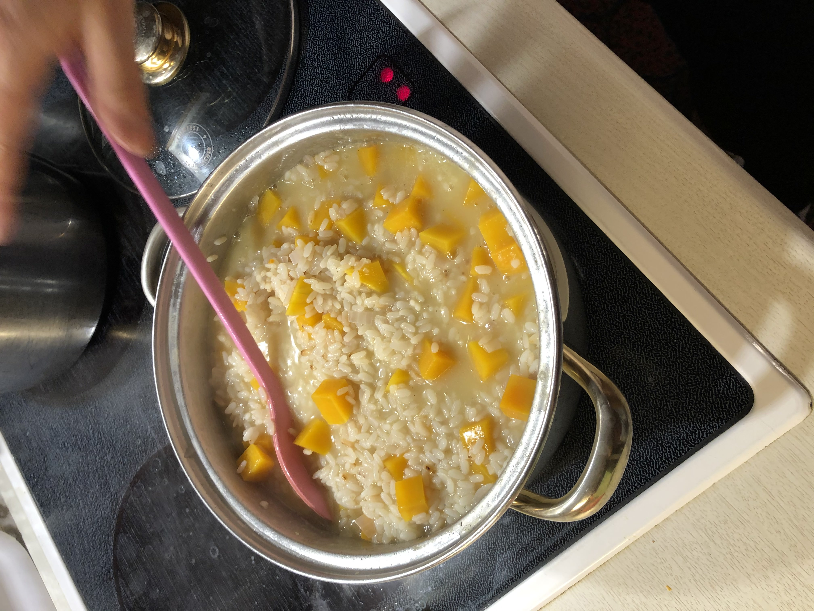
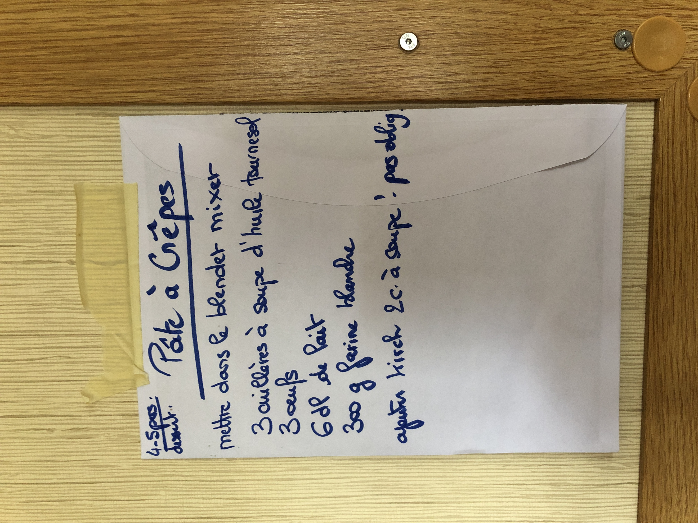
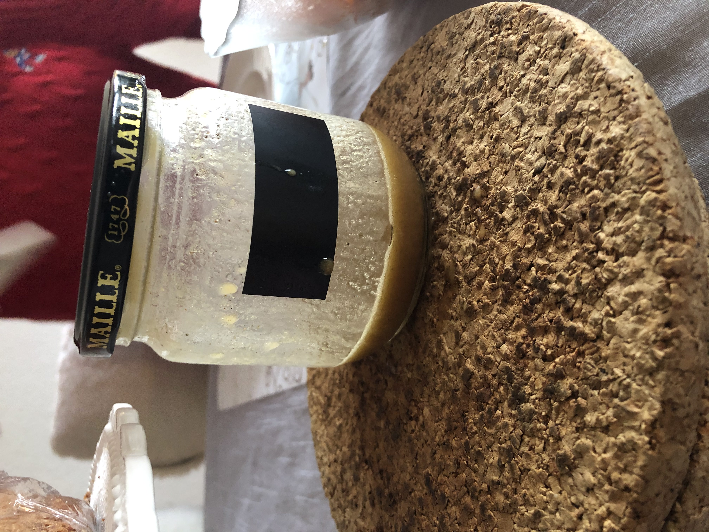

Chapter 3 Kochen
Hier geht es um alle Mahlzeiten, die ich bereits einmal zubereitet habe, damit du diese leicht replizieren kannst. Viel Spass beim Entdecken! =)
3.1 Meine Kochdatenbank
3.1.1 Mittagessen
- Brot + Chicoré + Tomaten
- Option 1: Käse
- Option 2: Avocado
- Option 3: gekochtes Ei
- Spaghetti
- Fischtäbli + Reis + Tomatensauce
- Spargeln + Kartoffeln
- Flammkuchen (= Speck + Crème-Fraîche + Zwiebeln)
- Optional: Zucchetti
- Thonsalat (Rote Bohnen aus der Dose + Mais + Thon aus der Büchse + genug Mayonnaise + Essig + Öl!)
- Crêpes (= Mehl + Ei + Milch + Öl)
- Gebackene Tomaten mit Eifüllung (= Tomaten + Ei + Olivenöl + Balsamico-Essig)
- Einfachstes Kochbuch: S. 162
- Hörnlisalat
- Tiptopf: S. 238
3.1.2 Nachtessen
- Rösti + Speck + Spiegel-Ei
- Linsenbolognese (= rote Linsen + kleingeschnittene Karotte + Pelati Tomaten // geschälte Tomaten in der Dose gekocht) + Spaghetti
- Auberginen im Ofen “à la Joffrey” (= Mozarella-Scheiben + Tomensauce + Parmesan + Olivenöl)
- Linsen-Suppe “à la Dominique” (= grüne Linsen + Kartoffeln + Knollen-Sellerie + Buillon + Wasser + Lorbeerblatt + Nelken)
- Fischtäbli + Pommes + Spinat + Zitronen-Scheiben
- Frittiertes Poulet (Paniermehl + Ei!) + Pommes + Avocado-Dipp
- Couscous (Karotten + Kichererbsen )
- Knoblauch-Brot (= Baguette + Knoblauch + Butter + Salz + Pfeffer + Zitronensaft)
- Taboulé
- Tiptopf: S. 236
- Älplermakronen
- Tiptopf: S. 243
- Pain au lait Tiptopf: S. 257
3.2 Kürbis-Risotto

Kürbis-Risotto Endresultat
- Zwiebeln & viel Butter in einer Pfanne anbraten lassen
- Wenn Schritt 1) ready, dann 4*120g = 480g Riis in Pfanne mit Zwiebeln und Butter (ohne Wasser!) reintun.
- Parallel dazu 4*2.5 = 10 reiss-becher in separater pfanne leicht „anbrennen“ lassen
- Wenn reiss langsam weiss wird, schritt für schritt wasser eingiessen. Wichtig: 7/10 wasser & 3/10 weisswein reingiessen.
- 400 g Kürbis (in scheibchen geschnitten) beigeben
- Rühren und immer mehr wasser reinrühren
- 20 min sollte der risotto ready sein :D
3.3 Crêpes
- In Mixer Tun:
- 100g de Mehl
- 1 Oeuf
- 2 dl Milch
- 3 Esslöffel d’huile (de tournesol)
- Optional: 2 Esslöfel Kirsch (für Verdauung)
- Für 4 Personen:

Crêpes Original-Rezept für 4 Personen
3.4 Salat-Sauce

Endresultat Salat-Sauce
- In Salatschüssel beigeben:
- Olivenöl
- Vinaigre de Melfore [= Essig] —> gleich viel, wie Olivenöl
- 1 Ess-Löffel Senf
- Salz & Pfeffer —> alles mischen und tadahh!
3.5 Thon-Salat (für 1+ Person)
- Mais & rote Bohnen aus der Büchse abwaschen unter kaltem Wasser.
- In Salatschüssel beigeben:
- Verhältnis von 55% Essig (Vinaigre de Melfort) und 45% Öl (huile de pepin de raisin). Ich denke, 2 Esslöffel reichen (nach 1 Versuch).
- Würze die Mischung mit Salz & Pfeffer.
- Thon aus der Büchse beigeben.
- Die gewaschenen Mais & rote Bohnen beigeben.
- Mayonnaise grosszügig beigeben (circa 1/3-tel). -> alles mischen und tadaaahhh! =)
3.6 Flamme-Kuchen (für 1 Person)
Flamme-Kuchen Endergebnis
- Teig auspacken (Anna’s Best –> sind relativ klein, reicht circa für eine Person)
- Crème Fraîche hinzufügen
- Regel: ein kleiner 250ml Topf, reicht für 3 Flammes
- Speckwürfel drüber streuen
- Käse - zum Beispiel Gruyère - drüber raffeln
- In den circa 240 C° heissen Ofen tun für 6min –> Tadaaah! :D
3.7 Steak 🥩:
- Knoblauch vorbereiten, dh in feine Scheiben schneiden (ca. 3 Gouse d‘ail für 3 Personen)
- Steak in Scheiben schneiden, ca. 2 cm breit
- Sonnenblumenöl in Pfanne
3.8 Pommes 🍟:
- Allumer la Friteuse
- Mettre les frites dans la friteuse
- Mettre à 180 degrès
- Mettre à 20 minutes
3.9 Sauce Tomate (à la Tee) 🍅:
- 2 Gousse D‘Ail schneiden, nicht zu dünn, sonst wird es verbrannt
- Sonnenblumenöl in Pfanne giessen (genug, damit es nicht verbrennt)
- Zwiebeln schneiden
- Sel & Poivre hinzufügen
- Nehme 1 ganze Tube Tomaten-Mark
- Wasser beifügen, ca 1/5
3.10 Ei-Omelette am Morrgen (1 Person):
- 2 rohe Eier in eine Schüssel tun
- Mit gabel das Eiweiss & Eigelb zusammenrühren
- In Pfanne ein wenig Rapsöl giessen
- Pfanne aufwärmen, dh warten, bis sie ein wenig warm wird
- Vorbereitete Eier in Pfanne giessen
- Eier braten für ca. 2-3 Minuten, bis es nicht mehr roh isch (nachdem es schon 2 Minzten am kochen ist, kannst du auch die Omellette falten, damit es schneller geht)
3.11 Crème Patissière:
Dies eignet sich beispielsweise, wenn du Erdbeer-Cupcakes machst. Du kannst sie im Migros oder Coop kaufen.
Das ist die Crème-Pâtissière
- Mache zuerst 200ml Schlagsahne (chantilly) mit Hilfe von Vollrahm.
- In einem separatem Behälter: mische das Puder “Crème Patisserie” (siehe Bild oben) mit 200ml Wasser & Kirsch ODER Rhum.
- Trick: Wenn du 200ml Wasser in eine Tasse gegossen hast, dann kannst du davon ein wenig wegwerfen und das dadurch fehlende Wasser mit Rhum oder Kirsch ersetzen.
- Mische die Schlagsahne zur Wasser-Puder-Rhum-Mischung dazu et c’est fini!!!
- Dann kannst du diese für deine Erdbeer-Cupcakes verwenden.